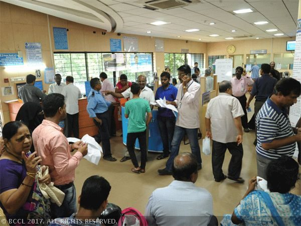
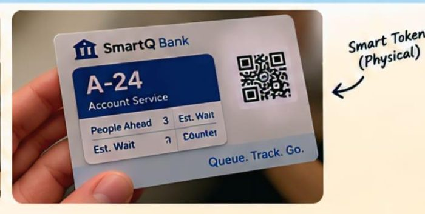
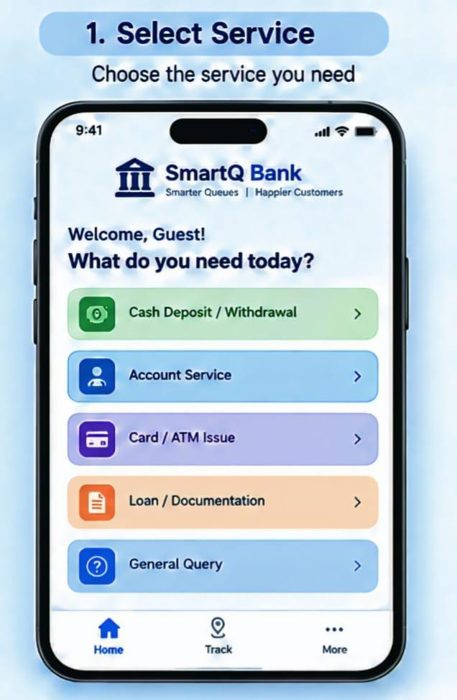
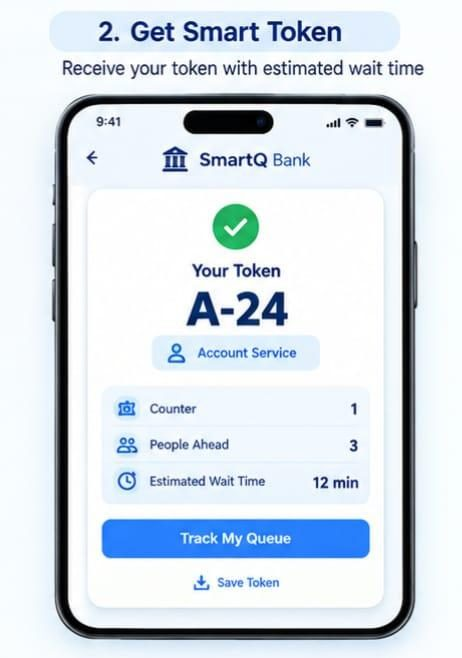
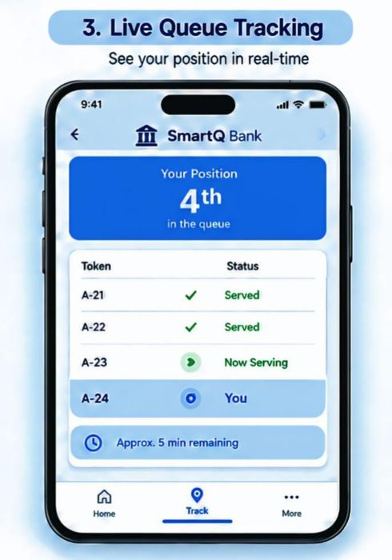
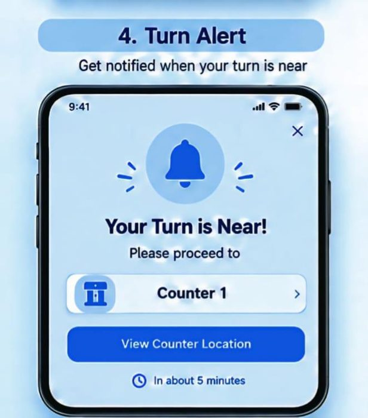
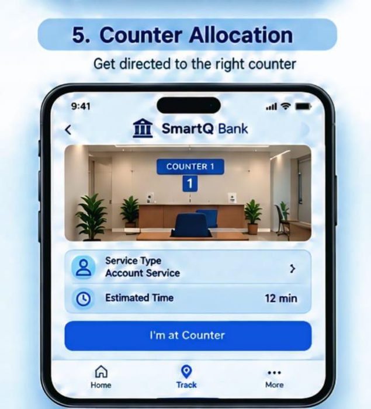
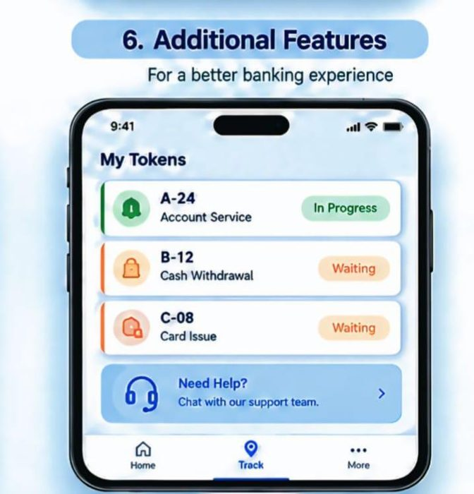

Take a token and ReadyLane starts checking everything your service needs: documents, records, officer approval, cash at the counter and joint holders. You're only called when every check has passed. If something is missing, you hear about it straight away, before you reach the counter.
Example screen (simulated)

Tokens and tracking alone are not patentable, so we needed something new.
Qmatic, Wavetec, Qminder offer QR tokens, wait-time estimates and live tracking. Wavetec adds priority rules and service-based routing.
US 11,676,080 and US 11,770,477 (tokens + ETA). US 9,432,804 and US 11,715,084 pre-stage bank transactions.
Application 202541030105 covers QR queues and ETA alerts. None of these make calling conditional on readiness while capping overtakes.
Use the app, the kiosk or a staff helper. Paper tokens get a QR code.
A ₹3L withdrawal needs officer approval and cash. A KYC update needs neither.
If something is missing, you get an instant fix alert on your phone, SMS or the lobby screen.
Called to a free counter (the one holding your cash, for withdrawals).
Documents, signature specimen and approval are already loaded, so service is faster.
ETA = remaining check time and expected counter wait, whichever is longer, since the checks run while you wait.
Each service gets its own checklist. Nobody waits for a cash check on an address change.
Scanned and verified, e.g. PAN or Form 60 for cash deposits above ₹50,000, or payee details on a DD form.
Core banking check: account status, balance, CKYC. The signature specimen is pre-loaded for the teller.
Requested in advance when the amount exceeds the teller limit (₹2,00,000 in this demo; set by bank policy), plus account opening and loan desk slots.
Confirms a counter drawer has the amount in the right denominations and earmarks it, with a vault top-up if needed.
Joint holders, second applicants, nominee or caregiver check in on the same token.
If a check fails, the token shows Action needed with the exact fix (upload PAN, re-sign a slip). You keep your place.
C-12 needs officer approval for ₹4.5L. Later customers who are already ready get served first, up to the cap.
Legend: checking ready locked
The kiosk prints a smart paper token with the token number, queue position, estimated wait and a QR code. A staff helper or the kiosk scanner runs the document check, so you get the same ReadyLane benefit.

Opens the live token page in any phone browser. No app and no login needed.
Add a phone number at the kiosk (optional) to get "action needed" and "you're called" alerts.
The screen shows every token as Checking, Ready, Called or Action needed. Calls are announced aloud.
Stepped outside? Your call stays open for 5 minutes. If you miss it, you go on hold and keep your place, not to the back.
queue a prepared transaction but don't make calling depend on the checks.
flags missing documents but doesn't control the queue.
reorders queues with no fairness guarantee.
A token is callable only when all readiness checks pass. Tokens may be served out of arrival order subject to a maximum-overtake limit, and the prepared record is sent to the counter.
Dependent claims: escalation at the cap, officer pre-approval, CashMatch, SyncToken, ETA model. Framed for technical effect (Patents Act, Section 3(k)).
Estimates from our deck, to be validated in a pilot. These are projections, not measured results.
less counter time for document-heavy services (estimate)
more customers per counter-hour (estimate)
repeat visits ("come back with document X") avoided (estimate)
overtakes per customer: guaranteed by design, not an estimate






All screens share one simulated branch, so a token you take in the demo shows up on the lobby TV and the staff dashboard.
Pick a service, get a QR token and watch your checklist tick off.
The TV screen with live statuses and voice announcements.
Queue, early approvals, cash drawers and fairness-cap counters.
What a customer sees after scanning the paper token.
Ask which documents you need, or talk to a human.
Download sample forms for every service, print them and fill them in by hand.